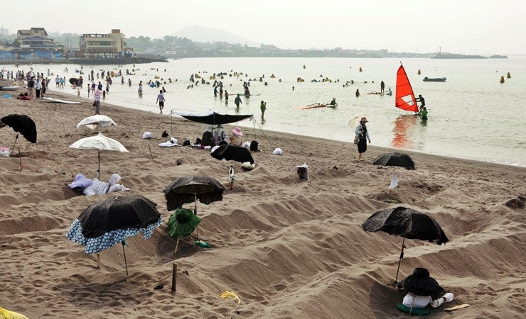

삼양검은모래해변
삼양검은모래해변은 이름처럼 모래가 검은색을 띄고있는데, 이 모래가 관절염이나 신경통에 효과가 있는것으로 알려져서 많은 분들이 모래찜질을 하러 온다고 합니다.
또 매년 7월에는 삼양검은모래 축제가 열려 불꽃놀이와 검은모래조각상 등을 볼수있고 제주도의 다양한 먹거리와 체험프로그램도 같이 진행된다고 하니 물놀이와 모래찜질, 축제를 동시에 즐길수 있습니다.
1.성산일출봉
2.아쿠아 플라넷
3.삼양검은모래해변